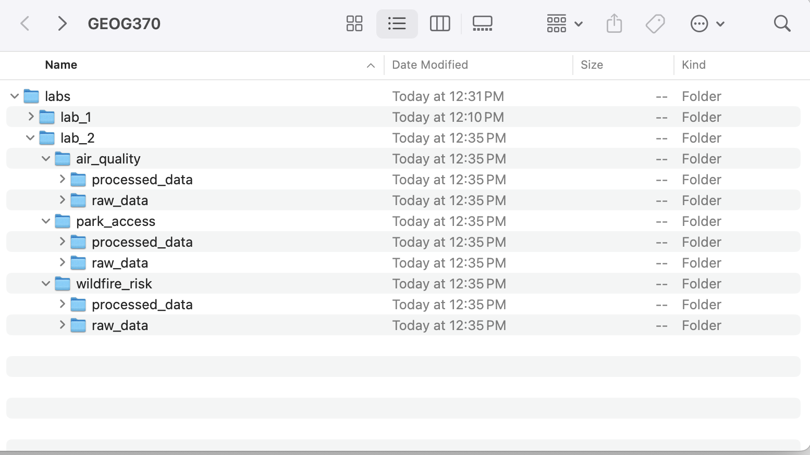

11 Doing Spatial Analysis in QGIS
This chapter introduces some of the most common tools used in spatial analysis and demonstrates how to apply them in QGIS. Spatial analysis often involves combining multiple tools in sequence to answer complex geographic questions. In this chapter, however, you are not expected to design those workflows yourself. Instead, you’ll follow structured steps to learn how individual tools work, what kinds of questions they help answer, and how to interpret the results they produce.
11.1 Setting up Folder Structure
You should use the following folder structure for Lab #2. Each research question should have its own project.

11.2 Research Question 1
Where is the intersection between vulnerable populations and existing permitted facilities that require a Major Air) permit in North Carolina?
11.2.1 Plain Language Summary
For this research question, we’re looking for where two things overlap
- Low-income communities (which we’re using as a stand-in for vulnerability)
- Major air-polluting facilities (which require a special EPA permit)
When we look at where polluting facilities and low-income communities are located together, we’re trying to understand whether some populations are more exposed to environmental risks than others.This kind of overlap can signal patterns of environmental injustice- situations where communities that already face social or economic challenges also have to deal with higher levels of pollution or health risks.
To analyze this research question, we will use the following steps:
- Download and add the data: We first need to load our census data and the locations of major air-polluting facilities
- Find low-income areas: We will use a select by attribute query to find only those census block groups that have a low median income
- Prepare air quality data for analysis: The air quality data begins in a GCS. Remember that for analysis purposes you generally want your data in a PCS. We will use the reproject tool to change the coordinate system.
- Create zones around facilities: The effects of pollution often extend beyond the boundaries of the facility itself. To identify nearby areas that could also be impacted, we’ll use a buffer to create a zone around each facility based on distance. This helps us include surrounding communities in our analysis.
- Find overlap: We want to find out which low-income communities are within the air pollution buffer zone. To do this, we will use the intersect tool.
11.2.2 Download Data
- 2010 Census Block Group Median Household Income (from 2013 American Community Survey)
- Current (June 2025) Major Air permits from EPA Geospatial Data
11.2.3 Add Data
The polluting facilities data starts as a tabular file (rows and columns), so we will need to turn that into a spatial dataset using the latitude and longitude fields.
We’ll also need to add our processed census data, which we table joined in Lab #1. Remember to start a new project for this research question and save it to “lab_2/air_quality/”
11.2.4 Select by Attribute
We will then filter the census block group data so that we can identify only those that fulfill our low-income classification (median household income < 4500). Export this selection as a new file into your “lab_2/air_quality/processed_data” folder.
11.2.5 Reproject
The tabular dataset representing locations with major air quality permits is in a Geographic Coordinate System, not a projected one. Given that we are going to be doing distance-based analysis, we must reproject that data. We typically want to make sure that all our datasets are in the same projection, so we will reproject the data to match the projection of our census block group data (EPSG:2264). Export this reprojection as a new file into your “lab_2/air_quality/processed_data” folder.
11.2.6 Buffer
A buffer will add a polygon around our facility points. This will allow us to identify areas that are within 1 mile of the facilities. Export this buffer as a new file into your “lab_2/air_quality/processed_data” folder.
11.2.7 Intersect
To find the intersection between vulnerable populations and areas proximate to high polluting facilities, we will use the intersect tool. Intersects retain the attributes of both of the layers. Export this intersect as new file into your “lab_2/air_quality/processed_data” folder.
11.2.8 Analyze Results
Now that you’ve completed the spatial analysis, take time to explore what your map shows.
- What patterns do you see in the overlap between low-income areas and major air-polluting facilities?
- Are there clusters, gaps, or surprises?
- How did the spatial analysis tools you used help reveal those patterns?
- Would you have been able to see the same information just by looking at the original data?
11.2.8.1 Critical Questions to Ask about the Data and Methods:
- What assumptions are embedded in defining “vulnerable populations” based solely on median household income?
- Why do we choose a 1-mile buffer, and what are the implications of this distance?
- What is the source of the EPA permit data, and what might be missing?
- This analysis uses 2010 block group data from the 2013 American Community Survey. What are the risks of using outdated demographic data for present-day decision-making?
- What are the implications of using the census block group as the unit of analysis?
11.3 Research Question 2
How many addresses are served by each park in Chapel Hill?
11.3.1 Plain Language Summary
In this research question, we’re exploring how accessible Chapel Hill’s parks are by looking at how many addresses fall within walking distance of each park. Access to parks is one part of understanding how well public amenities are distributed across the down. By analyzing the number of nearby addresses, we can see which parks are available to the highest number of people. This type of analysis also creates opportunity for further research on which areas are not served by existing parks and where new infrastructure might be needed.
To analyze this research question, we will use the following steps:
- Download, add, and prepare the data: We’ll load datasets for parks, addresses, and Chapel Hill boundaries. We’ll then reproject the parks layer to match the others.
- Limit the area of focus: The address dataset includes all addresses in Orange County. To isolate only the addresses that fall within Chapel Hill we will use the clip tool
- Measure access to parks: We will use a plug-in to create a service area around each park. This will show which areas are within a 10-minute walk from the park
- Count addresses within each park’s service area: We will use a spatial join to summarize how many addresses fall inside each service area.
11.3.2 Download Data
- Address points from Orange County GIS
- Parks from Chapel Hill Open Data
- Chapel Hill boundaries from Chapel Hill Open Data
11.3.3 Add Data
Create a new project, saved in your “lab_2/park_access” folder. Add a basemap and the data to this project.
11.3.4 Reproject
As always, we want to make sure that our data shares the same coordinate system before beginning spatial analysis. You should notice that the address and Chapel Hill boundary datasets are in EPSG:2264 and the parks dataset is in EPSG:3857. These are both projected coordinate systems, however EPSG:2264 is a local projection built for North Carolina. EPSG:3857 is a more globally focused projection. Since EPSG:2264 would be slightly more accurate for North Carolina, reproject the parks to EPSG:2264. Make sure to save this reprojected file into your “lab_2/park_access/processed_data” folder.
11.3.5 Clip
A clip will allow us to isolate only those addresses in Chapel Hill. Clip the addresses to the Chapel Hill boundary file. Save your output as a new file in your “lab_2/park_access/processed_data” folder.
11.3.6 Calculate Service Area
A service area represents the geographic region that can be reached from a location within a given travel distance or time, often used to model accessibility. Follow these instructions to download the ORS plugin. Then calculate 10 minute isochrones from each park. Note that when you save the data (which is not in EPSG:2264), you can set the PCS of the output so it reprojects when it saves.
11.3.7 Spatial Join
There is not a common “key” field between the service areas and our address data. Instead, the commonality between these two datasets is their spatial location. Therefore, to join these two datasets, we will use a spatial join. In this case, we will do a “join attributes by location (summary)” since we want to summarize the number of address points within each service area polygon. If we were interested in assigning each address point the name of the park whose service area it falls within we would use a regular spatial join (called “Join attributes by location” in QGIS). This type of join appends the attributes of one layer to another based on spatial relationships like intersection, containment, or proximity, but does not summarize counts or statistics.
11.3.8 Analyze Results
Now that you’ve completed the spatial analysis, take time to explore what your map shows.
- Which parks across Chapel Hill are serving the most people?
- Are there any surprises?
- How did the spatial analysis tools you used help reveal those patterns?
- Would you have been able to see the same information just by looking at the original data?
11.3.8.1 Critical Questions to Ask about the Data and Methods:
- What assumptions are we making when we define ‘served’ as being within a 10-minute isochrone from a park?
- Are addresses a good stand-in for people?
- Does a 10-minute walk on a map mean that it’s safe, comfortable, or desirable to walk there in real life?
11.4 Research Question 3
Which parts of Buncombe County face greater wildfire risk based on land cover patterns?
11.4.1 Plain Language Summary
In this research question, we’re exploring how wildfire risk varies across Buncombe County zip codes based on the types of land cover (from a raster) in each area. Some land cover classes (like forest) are more likely to burn than others (like wetlands). By analyzing these patterns, we can better understand where wildfire vulnerability may be highest across the county.
To analyze this research question, we will use the following steps:
- Download and add data: We will add the land cover and zip code data to a new project
- Assign risk to land cover classes: The land cover raster has many different values. The values are numeric, but are actually representing categories of land cover. To look at risk, we will use the reclassify raster tool to translate each land cover class to a risk scale from 1 (low risk) to 5 (highest risk). This tool will create a new raster that changes each pixel value from its landcover class to its wildfire risk.
- Summarize risk across zip codes: The zonal statistics tool will allow us to summarize the raster across zones defined by a vector dataset (the zip code dataset). This means that we can calculate an average wildfire risk in each zip code.
11.4.2 Download Data
2023 National Land Cover Database MLRC
Buncombe County Zip Codes from Buncombe County Open Data
11.4.3 Add Data
Create a new project, saved in your “lab_2/wildfire_risk” folder. Add a basemap and the data to this project. Change the symbology of the NLCD data to “Paletted/Unique values” and spend some time exploring the raster.
11.4.4 Reclassify Raster
We will now reclassify the land cover raster onto a common risk scale from 1 (low risk) to 5 (highest risk). Reclassifying a raster means allows us to assign new values to ranges or categories of existing raster cell values.
Note on coordinate system: The NLCD data is currently in a GCS, not a PCS. However, we will not reproject it. Reprojecting categorical rasters introduces a higher risk of distortion due to resampling. Since these rasters represent land types rather than continuous values, preserving the original cell values is most important.
Use the r.reclass tool and copy-paste the provided reclass rules for each raster. The output of each will be a numeric risk raster. Make sure you save this raster to “lab_2/wildfire_risk/processed_data”
| Value | Output (Risk Score) | NLCD Class |
| 11 | 1 | Open Water |
| 21 | 2 | Developed, Open Space |
| 22 | 2 | Developed, Low Intensity |
| 23 | 2 | Developed, Medium Intensity |
| 24 | 1 | Developed, High Intensity |
| 31 | 3 | Barren Land |
| 41 | 5 | Deciduous Forest |
| 42 | 5 | Evergreen Forest |
| 43 | 5 | Mixed Forest |
| 52 | 4 | Shrub/Scrub |
| 71 | 4 | Grassland/Herbaceous |
| 81 | 3 | Pasture/Hay |
| 82 | 2 | Cultivated Crops |
| 90 | 2 | Woody Wetlands |
| 95 | 2 | Emergent Herbaceous Wetlands |
This is what to paste in the “Reclass rules text”
11 = 1
21 = 2
22 = 2
23 = 2
24 = 1
31 = 3
41 = 5
42 = 5
43 = 5
52 = 4
71 = 4
81 = 3
82 = 2
90 = 2
95 = 2
* = NULL
11.4.5 Zonal Statistics
To summarize wildfire risk by ZIP code, we will use zonal statistics, which summarizes raster values (wildfire risk) based on vector boundaries (zip code boundaries). Calculate the mean value for each ZIP code. This gives an average vulnerability score (ranging roughly from 2 to 10) that reflects the average risk across each ZIP code. Make sure to save your zonal statistics output to “lab_2/wildfire_risk/processed_data”
11.4.6 Analyze Results
Now that you’ve completed the spatial analysis, take time to explore what your map shows.
- Which zip codes across Buncombe County have the highest land cover risk?
- Are there any surprises?
- How did the spatial analysis tools you used help reveal those patterns?
- Would you have been able to see the same information just by looking at the original data?
11.4.6.1 Critical Questions to Ask about the Data and Methods:
- How does the choice of administrative unit (ZIP codes) shape our understanding of vulnerability?
- What important variables are missing from this model of wildfire vulnerability?
- What are the limitations of using a strictly physical model for a hazard with complex social consequences?